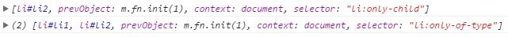

jQuery选择器和CSS选择器一样，并在其基础上做出了拓展。
可在此页面上练习jQuery选择器：http://mrbird.leanote.com/single/jQuery-Selectors-Lab-Page
基本选择器
| 选择器 | 描述 | 返回 | 示例 |
|---|---|---|---|
| #id | 根据给定的id匹配一个元素 | 单个元素 | $(“#test”)选取id为test的元素 |
| .class | 根据给定的类名匹配元素 | 集合元素 | $(“.test”)选取所有class为test的元素 |
| element | 根据给定的元素名匹配元素 | 集合元素 | $(“p”)选取所有<p>元素 |
| * | 匹配所有元素 | 集合元素 | $(“*”)选取所有元素 |
| selector1,selector2 ……，selectorN | 将每一个选择器匹配到的元素 合并后一起返回 | 集合元素 | $(“div,span,p.myClass”)选取所有<div>， <span>和 拥有class为myClass的<p>标签的一组元素 |
层次选择器
| 选择器 | 描述 | 返回 | 示例 |
| $(“ancestor descendant”) | 选取ancestor元素里的所有descendant （后代）元素 | 集合元素 | $(“div span”)选取<div>里的所有的 <span>元素 |
| $(“parent>child”) | 选取parent元素下的child 元素与\$(“ancestor descendant”) 有区别，\$(“ancestor descendant”)选择的 是后代元素 | 集合元素 | $(“div>span”)选取<div>元素下元素 名是<span>的子元素 |
| $(“prev+next”) | 选取紧接在prev元素后的next元素 | 集合元素 | $(“.one+div”)选取class为one的下一 个<div>同辈元素 |
| $(“prev~siblings”) | 选取prev元素之后的所有siblings元素 | 集合元素 | $(“#two~div”)选取id为two的元素 后的 所有<div>同辈元素 |
过滤选择器
jQuery过滤选择器规则同CSS中的伪类选择器，都以一个冒号(:)开头。按照不同的过滤规则，过滤选择器可以分为基本过滤器，内容过滤器，可见性过滤器，属性过滤器，子元素过滤器和表单对象属性过滤选择器。
基本过滤选择器
| 选择器 | 描述 | 返回 | 示例 |
| :first | 选取第一个元素 | 单个元素 | $(“div:first”)选取所有<div>元素中第一个<div>元素 |
| :last | 选取最后一个元素 | 单个元素 | $(“div:last”)选取所有<div>元素中最后一个<div>元素 |
| :not(selector) | 去除所有与给定选择器匹配的 元素 | 集合元素 | $(“input:not(.myClass)”)选取class不是myClass的<input> 元素 |
| :even | 选取索引是偶数的所有元素， 索引从0开始 | 集合元素 | $(“input:even”)选取索引是偶数的<input>元素 |
| :odd | 选取索引是奇数的所有元素， 索引从0开始 | 集合元素 | $(“input:odd”)选取索引是奇数的<input>元素 |
| :eq(index) | 选取索引等于index的元素， (index)从0开始 | 集合元素 | $(“input:eq(1)”)选取索引等于1的<input>元素 |
| :gt(index) | 选取索引大于index的元素， (index)从0开始 | 集合元素 | $(“input:gt(1)”)选取索引大于1的<input>元素 （注：大于1，而不包括1） |
| :lt(index) | 选取索引小于index的元素， (index)从0开始 | 集合元素 | $(“input:lt(1)”)选取索引小于1的<input>元素 （注：小于1，而不包括1） |
| :header | 选取所有的标题元素，如h1， h2等 | 集合元素 | $(“:header”)选取网页中所有header，如h1,h2… |
| :animated | 选取当前正在执行动画的元素 | 集合元素 | $(“div:animate”)选取正在执行动画的<div>元素 |
| :focus | 获取当前获取焦点的元素 | 集合元素 | $(“input:focus”)获取当前获取焦点的<input>元素 |
| :root | 选择文档的根元素 | 单个元素 | $(“:root”)获取当前文档的根元素 |
| :lang(language) | 只选择采用特定语言的元素 | 集合元素 | $(“p:lang(en)”)选取带有以 “en” 开头的lang 属性值的 所有 <p> 元素 |
内容过滤选择器
| 选择器 | 描述 | 返回 | 示例 |
| :contains(text) | 选取含有文本内容为”text”的元素 | 集合元素 | $(“div:contents(‘我’)”)选取含有文本我的<div>元素 |
| :empty | 选取不包含子元素和文本的空元素 | 集合元素 | $(“div:empty”)选取不包含子元素(包括文本元素)的 <div>元素 |
| :has(selector) | 选取含有选择器所匹配的元素的元素 | 集合元素 | $(“div:has(p)”)选取含有<p>元素的<div>元素 |
| :parent | 选取含有子元素或文本的元素 | 集合元素 | $(“div:parent”)选取拥有子元素（包括文本元素）的 <div>元素 |
可见性过滤选择器
| 选择器 | 描述 | 返回 | 示例 |
| :hidden | 选取所有不可见元素 | 集合元素 | \$(“:hidden”)选取所有不可见元素。包括<input type=”hidden/“>， <div sytle=”dispaly:none;”>和<div>等元素。 如果只想选取<input>元素，可以使用\$(“input:hidden”) |
| :visible | 选取所有可见元素 | 集合元素 | $(“input:visible”)选取所有可见的<div>元素 |
属性过滤选择器
| 选择器 | 描述 | 返回 | 示例 |
| [attribute] | 选取拥有此属性的元素 | 集合元素 | $(“div[id]”)选取拥有属性id的元素 |
| [attribute=value] | 选取属性的值为value的元素 | 集合元素 | $(“div[title=test]”)选取属性title为”test”的<div>元素 |
| [attribute!=value] | 选取属性的值不等于value的元素 | 集合元素 | $(“div[title!=test]”)选取属性title不等于”test”的<div> 元素（注意：没有属性title的<div>元素也会被选取） |
| [attribute^=value] | 选取属性的值以value开始的元素 | 集合元素 | $(“div[title^=test]”)选取属性title以”test”开始的<div> |
| [attribute$=value] | 选取属性的值以value结束的元素 | 集合元素 | \$(“div[title$=test]”)选取属性title以”test”结束的<div> |
| [attribute*=value] | 选取属性的值含有value的元素 | 集合元素 | $(“div[title*=test]”)选取属性title含有”test”的<div> |
| [attribute|=value] | 选取属性等于给定字符串或以该 字符串为前缀（该字符串后跟一个 “_“）的元素 | 集合元素 | $(“div[title|=’en’]”)选取属性tite等于en或以en为前缀 （该字符串后跟一个连字符”_“）的元素 |
| [attribute~=value] | 选取属性用空格分隔的值中包含 一个给定值的元素 | 集合元素 | $(“div[title~=’uk’]”)选取属性title用空格分隔的值中包含 字符uk的元素 |
| [attribute1] [attribute2] [attributeN] | 复合属性选择器满足多个条件， 每选择一次，范围缩小一次 | 集合元素 | \$(“div[id][title$=’test’]”)选取拥有属性id，并且属性title 以”test”结束的<div>元素 |
子元素过滤选择器
| 选择器 | 描述 | 返回 | 示例 |
| :nth-child (index/even/ odd/equation) | 选取每个父元素下的第index个 子元素或者奇偶元素（index从1 开始） | 集合元素 | :eq(index)只匹配一个元素，而:nth-child将为每一个父 元素匹配子元素，并且:nth-child(index)的index是从1 开始的，而eq(index)是从0开始的 |
| :nth-last-child (index/even/ odd/equation) | 选取父元素下的倒数第n个子元 素或符合特定顺序规则的元素 | 集合元素 | :nth-last-child(2)表示作为父元素的倒数第2个子元素； :nth-last-child(3n)表示匹配作为父元素倒数顺序的第3n 个子元素的元素（n表示包括0在内的自然数） |
| :first-child | 选取每个父元素的第一个子元素 | 集合元素 | :first只返回一个元素，而:first-child选择符将为每个父 元素匹配子元素。例如$(“ul li:fisrt-child”)选取每个<ul> 中的第一个<li>元素 |
| :last-child | 选取每个父元素的最后一个 子元素 | 集合元素 | :last只返回一个元素，而:last-child选择符将为每个父 元素匹配子元素。例如$(“ul li:last-child”)选取每个<ul> 中的末尾<li>元素 |
| :only-child | 如果某个元素是它父元素中唯一 的子元素，那么将会被匹配。如 果父元素中含有其他元素，那么 不会被匹配 | 集合元素 | $(“ul li:only-child”)在<ul>中选取是唯一子元素的 <li>元素 |
| :only-of-type | 匹配作为父元素唯一一个该类型 的子元素的元素，将其封装为 jQuery对象并返回。 | 集合元素 | $(“li:only-of-type”)选取li父元素下的唯一的一个li元素 |
| :first-fo-type | 匹配作为父元素的第一个该类型 的子元素的元素，将其封装为 jQuery对象并返回 | 集合元素 | \$(“span:first-of-type”)选取span父元素下的第一个 span元素，等价于\$(“span:nth-of-type(1)”) |
| :last-of-type | 匹配作为父元素的最后一个该类 型的子元素的元素，将其封装为 jQuery对象并返回 | 集合元素 | \$(“span:last-of-type”)选取span父元素下的最后一个 span元素，等价于\$(“span:nth-last-of-type(1)”) |
| :nth-of-type (index/even/ odd/equation) | 匹配作为父元素的同类型子元素中 的第n个(或符合特定顺序的)元素， 将其封装为jQuery对象并返回 | 集合元素 | $(“span:nth-of-type(2)”)选取span父元素下的第二个 span元素 |
| :nth-last-of-type (index/even/ odd/equation) | 匹配作为父元素的同类型子元素中 的倒数第n个（或符合特定倒数顺 序的）元素，将其封装为jQuery对 象并返回 | 集合元素 | $(“span:nth-last-of-type(2)”)选取span父元素下的倒 数第二个span元素 |
:nth-child()选择器是很常见的子元素过滤选择器，详细功能如下：
(1) :nth-child(even)能选取每个父元素下的索引值是偶数的元素。
(2) :nth-child(odd)能选取每个父元素下的索引值是奇数的元素。
(3) :nth-child(2)能选取每个父元素下的索引值等于2的元素。
(4) :nth-child(3n)能选取每个父元素下的索引值是3的倍数的元素。(n从1开始)
另外，关于:only-child和:only-of-type的区别可以看下面这个例子：
1 | <ul> |
打印结果：

表单对象属性过滤选择器
此选择器主要是对所选择的表单元素进行过滤，例如选择被选中的下拉框，多选框等元素。
| 选择器 | 描述 | 返回 | 示例 |
| :enabled | 选取所有可用元素 | 集合元素 | $(“#form1:enabled”)选取id为form1的表单内所有可用元素 |
| :disabled | 选取所有不可用元素 | 集合元素 | $(“#form2:disabled”)选取id为form2的表单内所有不可用元素 |
| :checked | 选取所有被选中的元素 （单选框，复选框） | 集合元素 | $(“input:checked”)选取所有被选中的<input>元素 |
| :selected | 选取所有被选中的选项元素 （下拉列表） | 集合元素 | $(“select option:selected”)选取所有被选中的选项元素 |
表单选择器
| 选择器 | 描述 | 返回 | 示例 |
| :input | 选取所有<input>，<textarea>,<select> 和<button>元素 | 集合元素 | $(“:input”)选取所有<input>，<textarea>，<select> 和<button>元素 |
| :text | 选取所有的单行文本框 | 集合元素 | $(“:text”)选取所有的单行文本框 |
| :password | 选取所有的密码框 | 集合元素 | $(“:password”)选取所有的密码框 |
| :radio | 选取所有的单选框 | 集合元素 | $(“:radio”)选取所有的单选框 |
| :checkbox | 选取所有的多选框 | 集合元素 | $(“:checkbox”)选取所有的多选框 |
| :submit | 选取所有的提交按钮 | 集合元素 | $(“:submit”)选取所有的提交按钮 |
| :image | 选取所有的图像按钮 | 集合元素 | $(“:image”)选取所有的图像按钮 |
| :reset | 选取所有的重置按钮 | 集合元素 | $(“:reset”)选取所有的重置按钮 |
| :button | 选取所有的按钮 | 集合元素 | $(“:button”)选取所有的按钮 |
| :file | 选取所有的上传域 | 集合元素 | $(“:file”)选取所有的上传域 |
| :hidden | 选取所有的不可见元素 | 集合元素 | 同前所述 |